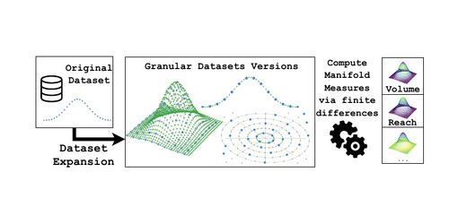
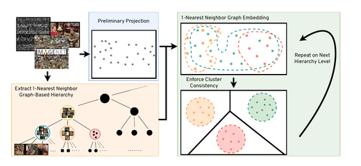
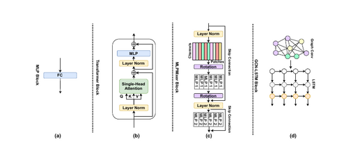
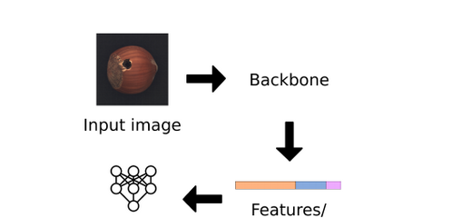
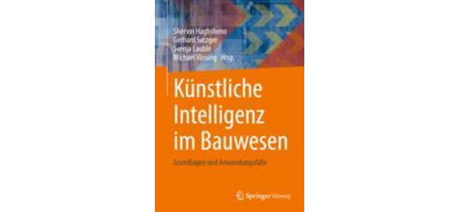
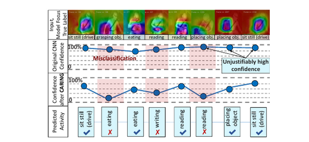
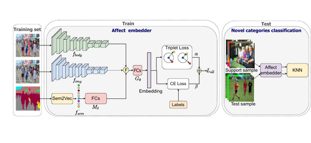

2022–Present
Senior Machine Learning Scientist · DeepHealth
Working on deep learning for lung disease detection, including model development, data selection, and reliability- and regulation-oriented workflows.
Machine Learning Researcher · Mathematician

I work at the intersection of machine learning, mathematics, and applied AI. My background spans deep learning, computer vision, industrial ML, and mathematical research, with a growing focus on manifold learning and geometric views of representation learning and deep networks.
I am particularly interested in research directions that connect geometry, manifold structure, data analysis, and deep learning theory. At the moment, I am especially interested in collaborations and academic opportunities related to the theory of deep learning.
Working on deep learning for lung disease detection, including model development, data selection, and reliability- and regulation-oriented workflows.
Research in computer vision and machine learning, including h-NNE, supervision, and construction-related vision projects.
Built computer vision and activity-recognition solutions for aircraft handling processes and operational analytics.
Worked on predictive modeling, optimization, data infrastructure, and AWS-based systems in manufacturing and supply-chain settings.
Full-stack development for scheduling and time-tracking software in an agile environment.
Research in mathematical logic and set theory as a Marie Skłodowska-Curie fellow.





Image-based construction progress monitoring in a practical engineering context.

Work on calibration and confidence estimation for driver observation models under real-world deployment shifts.

A benchmarking and experimentation toolkit for studying geometric properties of synthetic and real-life-like data manifolds.
Co-organized tutorial on dimensionality reduction, clustering, and structure in data for computer vision and machine learning.
Curated reading and implementation lists for two closely related toolboxes: dimensionality reduction and clustering.
An open-source toolkit accompanying our ICML 2024 position paper, with baselines and evaluation tools for time-series anomaly detection.
A hierarchical dimensionality reduction method related in spirit to t-SNE and UMAP, but designed for speed, simplicity, and structured coarse-to-fine exploration.